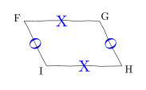
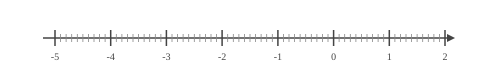
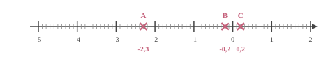

$-8m-2=11$ $-8m-2{\color{blue}\boldsymbol{\,\,+\,\,2}}=11{\color{blue}\boldsymbol{\,\,+\,\,2}}$ $-8m=13$ $-8m{\color{blue}\boldsymbol{\,\div\,(-8)}}=13{\color{blue}\boldsymbol{\,\div\,(-8)}}$ $m=-\dfrac{13}{8}$ La solution de l'équation $-8m-2=11$ est ${\color{#8B3C52}\boldsymbol{-\dfrac{13}{8}}}$.
03
Question
Pour chacune des figures suivantes, tracées à main levée, préciser s'il s'agit d'un parallélogramme.

On sait que $FG = HI$ et $GH = IF$. Or, « si un quadrilatère a ses côtés opposés de même longueur, alors c'est un parallélogramme ». Donc ${FGHI}$ est un parallélogramme.
04
Question
On choisit au hasard un ticket parmi contenant $6$ tickets gagnants et $15$ tickets perdants. Quelle est la probabilité d'obtenir un ticket gagnant ? On donnera le résultat sous forme d'une fraction irréductible.
Dans une situation d'équiprobabilité,
on calcule la probabilité d'un événement par le quotient :
$\dfrac{\text{Nombre d'issues favorables}}{\text{Nombre total d'issue}}$.
La probabilité est donc donnée par : $\dfrac{\text{Nombre de boules gagnants}}{\text{Nombre total de boules}}
=\dfrac{6}{21} =\dfrac{2{\color{#C5607A}\boldsymbol{\times3}} }{7{\color{#C5607A}\boldsymbol{\times3}}}={\color{#8B3C52}\boldsymbol{\dfrac{2}{7}}}$.
01
Question
Dans un collège, $25\%$ des 500 élèves participent à une opération de nettoyage.
Combien d'élèves ne participent pas à cette opération ?
Le nombre d'élèves participant à cette opération est égal à :
$500 \times \dfrac{25}{100} = 125$.
Le nombre d'élèves ne participant pas à cette opération est donc égal à :
$500 - 125 = {\color{#8B3C52}\boldsymbol{375}}$.
Une autre méthode consiste à calculer le pourcentage d'élèves ne participant pas à cette opération, qui est égal à $100\% - 25\% = 75\%$.
Le nombre d'élèves ne participant pas à cette opération est donc égal à :
$500 \times \dfrac{75}{100} = {\color{#8B3C52}\boldsymbol{375}}$.
02
Question
Placer les points : $A(-2{,}3), B(-0{,}2), C(0{,}2)$.


03
Question
Calculer le périmètre d'un cercle de diamètre $2\text{ cm}$
$\mathcal{P}_\text{cercle} = d \times \pi$ $\mathcal{P}_\text{cercle} = {\color{#8B3C52}\boldsymbol{2\pi}}\text{ cm}$
04
Question
$10\,\, ; \,\, 10 \,\, ; \,\,6\,\, ; \,\,2 \,\, ; \,\,17$
La moyenne de cette série est :
A. $9$ B. $11$ C. $10$ D. $8{,}5$
La somme des $5$ valeurs est : $10+10+6+2+17= 45$.
La moyenne est donc $\dfrac{45}{5}=9$. La bonne réponse est la réponse A.
01
Question
Donner la notation scientifique des nombres suivants. $10\,000$$\,=$$\,\dots$
Magalie lit sur sa recette de gâteau au citron pour $11$ personnes qu'il faut $220$ g de farine. Elle veut adapter sa recette pour $13$ personnes. Quelle masse de farine doit-elle prévoir ?
Commençons par trouver la masse de farine pour une personne. $11$ personnes, c'est ${\color{#C5607A}\boldsymbol{11}}$ fois $1$ personne. il faut donc ${\color{#C5607A}\boldsymbol{11}}$ fois moins que $220$ g pour $1$ personne. $220$ g $\div {\color{#C5607A}\boldsymbol{11}} = 20$ g il faut ${\color{#C5607A}\boldsymbol{20}}$ g de farine pour $1$ personne. Cherchons maintenant la quantité nécessaire pour 13 personnes. $13$ personnes, c'est ${\color{#C5607A}\boldsymbol{13}}$ fois $1$ personne. Donc, il faut ${\color{#C5607A}\boldsymbol{13}}$ fois plus que 20 g de farine que pour $1$ personne pour faire sa recette. ${\color{#C5607A}\boldsymbol{20}}$ g $\times {\color{#C5607A}\boldsymbol{13}} = 260$ g
Magalie doit utiliser ${\color{#8B3C52}\boldsymbol{260}}$ g de farine pour $13$ personnes.
03
Question
Calculer le volume, arrondi au $\text{ dm}^3$ près, d'une pyramide de hauteur $2\text{ dm}$ et dont la base est un triangle.
La base du triangle mesure $8\text{ dm}$ et la hauteur associée à cette base mesure $4\text{ dm}$.